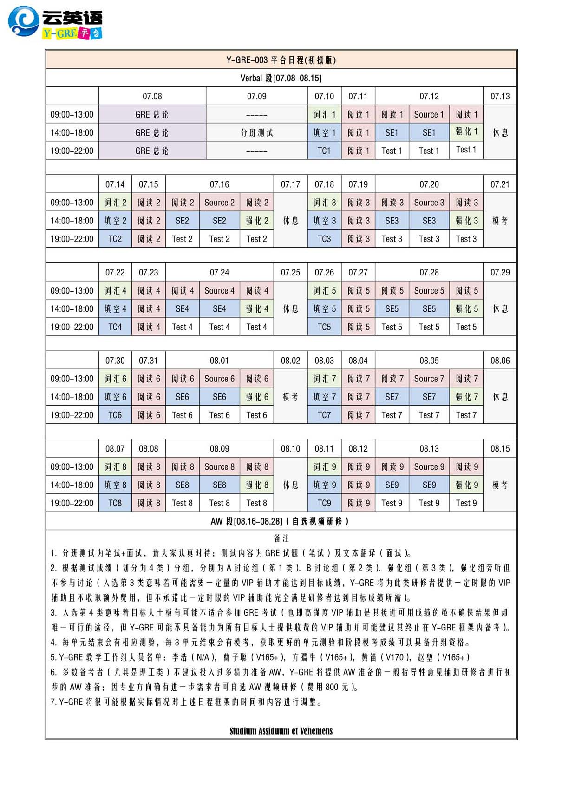
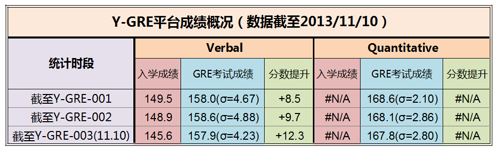

云英语
云英语：因学术而改变

“Y-GRE平台”是“云英语”研发的高端学术产品，目前处于内测阶段。平台旨在从全新的技术和制度两方面，辅助参与者力争Verbal Reasoning 160+的理想成绩，同时培养高级学术阅读能力。未参加过“VB研修”者从此平台收益的概率将大大降低。截至目前Y-GRE内测总人数已逾百人，成绩反馈情况：V平均157.9 Q平均167.8 GRE总平均325.7。
Y-GRE内测版需有VB研修（词汇建造师）为基础。Y-GRE可与VB联合报名，联报可以享受1000元的优惠。考生需在寒假前预留至少一个月完成VB研修（建议5月最晚不迟于6月开始）。
Y-GRE目前仍有高分奖学金政策：一年内考GRE，能提供成绩单原件及电子版，并按指定方式公开成绩，则Verbal Reasoning 达到160+/165+， 颁发荣誉奖学金3000元/6000元（限1次）； Verbal Reasoning达到170，另报销GRE考试费用（不限次）。
·云英语保留对各项实施细节合理调整的权利，有进一步咨询可致电：010-82863898。
版权所有 2011-2015 云英语 Y-English All Rights Reserved
地址：北京市海淀区五道口华清嘉园商务会馆802
电话：400-876-3898 010-82863898 82863899 传真：010-82863897